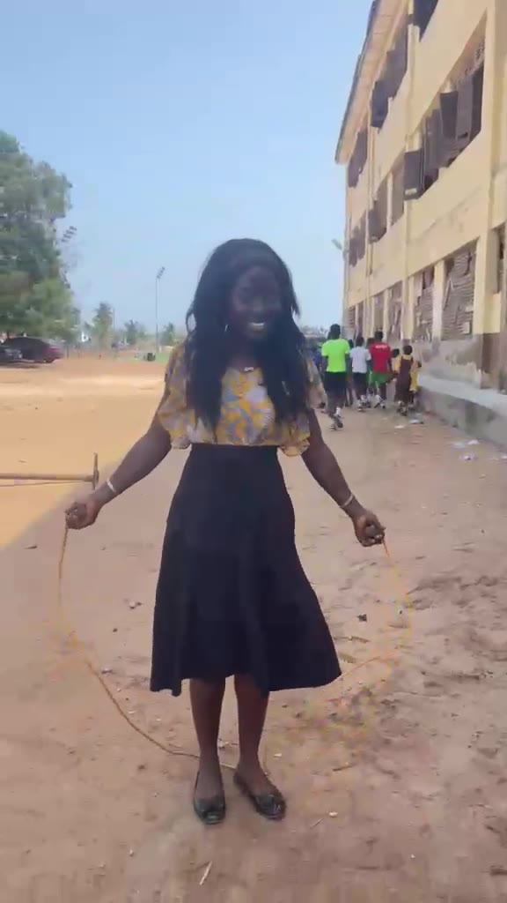

Internship & Practicum
My internship took me to ANYAA M/A 2 Basic School, where I completed three placements between July 2025 and November 2026. In my latest one I taught Mathematics, English and Science in JHS 2. This section covers my placements, my responsibilities and what I learned.
ANYAA M/A 2 Basic School
Latest placement · October – November 2026

About ANYAA M/A 2 Basic School
ANYAA M/A 2 Basic School was established in 2019. Its learners were first housed at the Anyaa D/A Basic School, but that school became overcrowded. The Municipal Chief Executive, working with the Member of Parliament and the Education Directorate, built a new school behind the Ga Central Municipal Assembly office at Auntie Aku to make room for the growing number of pupils.
Today it has over 500 learners and 28 staff, and it is regarded as one of the best schools in the municipality. It has classrooms, an ICT laboratory, a library, a football field, a basketball pitch, office space and toilet facilities.
Working with the school: the Parent-Teacher Association, chiefs and elders, religious organisations, non-governmental organisations and the District Assembly.

My Placements at This School
I returned to ANYAA M/A 2 Basic School for three Supported Teaching in Schools placements. The lead mentor throughout was Eric Assuming.
July 2025
School observation, school profile and a child study. Mentor: Dora Naa Omese Nartey.
April 2026
JHS 1. Induction, study of the Basic School Curriculum and a small classroom enquiry with four learners. Mentor: Naa E. K. Ashley.
20th Oct – 4th Nov 2026
JHS 2. Teaching Mathematics, English and Science, and a study of teacher professionalism. Mentor: Richard Ayitey.
Wider School Life
Skipping with learners during break. Joining in the life of the school outside the classroom helped me build good relationships with my learners.
My Responsibilities
- Planning and teaching lessons in line with the curriculum.
- Preparing teaching and learning materials (TLMs) like charts, flashcards and counters.
- Managing the classroom and creating a safe, inclusive learning environment.
- Assessing learners through class exercises, homework and continuous assessment.
- Marking, recording scores and giving feedback to learners.
Goals of My Internship
- To apply what I am learning in my Bachelor of Education in a real classroom.
- To develop confidence in lesson planning, delivery and classroom management.
- To improve learners' understanding in Mathematics, English and Science through practical, learner-centred activities.
- To learn how to assess learners fairly and support learners with different needs.
Challenges I Faced
Challenges I recorded in my Year 2 journal while studying teacher professionalism.
Noise and Interruptions
Background noise from other classes interrupted my observations and made some of my audio recordings unclear.
Limited Time
There was not enough time to observe both classroom teaching and the wider school life, such as sports and staff meetings.
Changed Behaviour on Camera
Some teachers changed their natural behaviour when they saw me recording, which made it harder to see everyday practice.
What I Gained
Related Reflections
Read what my internship taught me and where I want to grow.